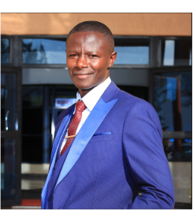
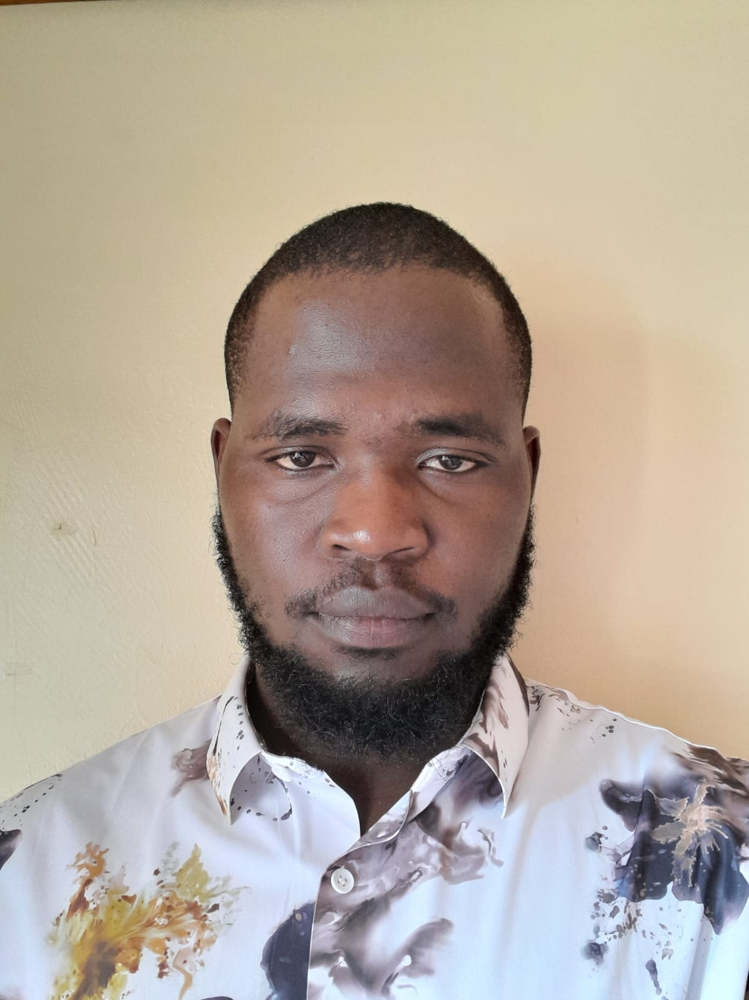
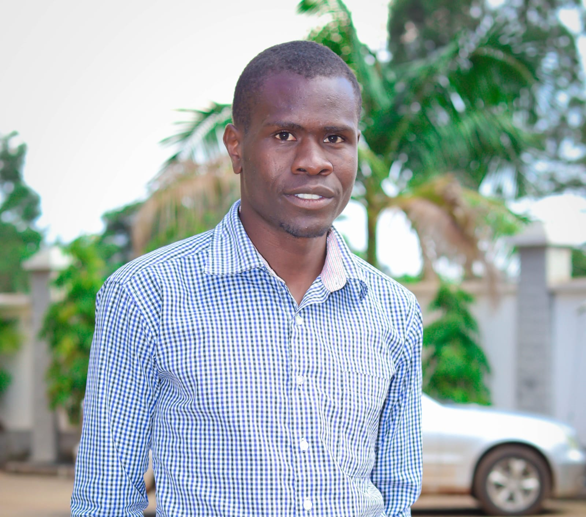
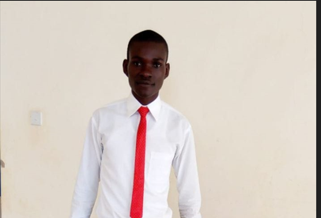

Executive Board

Dr. Lawrence Otieno Jabuya
Dr. Lawrence Otieno Jabuya is an agricultural economist, agribusiness strategist, and climate resilience leader with over nine years of experience in sustainable development and community transformation. As Managing Director of Amity Sustain Centre and a prospective PhD scholar, he specializes in inclusive agribusiness, food systems resilience, and governance.
He serves as National and International Vice Chairperson of the Chuka University Alumni Association and champions participatory leadership and evidence-based decision-making.
As Founding Visionary and Chairperson of ARHICA’s Board of Directors, he provides strategic direction, governance oversight, and policy leadership to advance inclusive, climate-adaptive African communities.
Eng. Linus Eldon O.
Eng. Linus Eldon O. is the Vice Chairperson of ARHICA, providing strategic governance support and institutional oversight to strengthen organizational systems and ensure structured operational growth.
A graduate in Applied Computer Science, he brings expertise in ICT systems, digital infrastructure, and data governance. He integrates technology, innovation, and accountability to advance climate resilience and institutional transformation.
He champions resilient institutions, inclusive leadership, and youth-driven climate innovation across Africa.

Mr. Vincent Omondi Isaiah
The Secretary General of ARHICA, he coordinates board meetings, manages official records, ensures statutory compliance, and oversees financial authorizations to promote transparency and accountability. An Ecotourism and Hospitality Management specialist with a BSc from Chuka University, he brings extensive experience in administration, research support, and organizational coordination across academic, government, and conservation sectors. As Founder and CEO of SevenB Insights Ltd, he strengthens governance, data-driven decision-making, and institutional reporting.
Within ARHICA, he focuses on enhancing board operations, governance systems, documentation, and digital innovation initiatives.

Mr.Geoffrey Odhiambo Ondigo
A Certified educator working with Teachers Service Commission and a business-oriented financial expert with over five years of experience in financial management and organizational leadership. As a Treasurer of ARHICA organization, he is responsible for overseeing financial planning, budgeting, reporting, and ensuring strong financial controls and accountability. He is detail-oriented, analytical, and committed to maintaining financial transparency and sustainability. With a strong understanding of business strategy and financial operations, He focuses on supporting organizational growth, improving financial performance, and making sound, data-driven decisions. He brings integrity, professionalism, and a results-driven mindset to every responsibility he undertakes.
Full Name Here
Mr. Omondi O. Sylvester
Sylvester Omondi is a dynamic leader and technology innovator, dedicated to promoting sustainable development and community resilience. As Coordinator and Executive Member, he oversees program implementation, strategic planning, and organizational coordination to ensure ARHICA’s initiatives achieve tangible results.
With a background in Environmental Science and Technology and ongoing studies in Software Engineering, Sylvester combines governance experience with technical expertise. A certified Ethical Hacker, he strengthens organizational systems, digital infrastructure, and cybersecurity. He is committed to inclusive leadership, evidence-based decision-making, and innovative solutions that advance climate resilience and sustainable livelihoods.

Mr. Chrspine Omondi Okoth
Mr. Chrispine Okoth is a dedicated Agricultural Economist, Financial Advisor, Farm Manager, and farmer educator with experience supporting both large- and small-scale agricultural enterprises. He is deeply committed to advancing sustainable agriculture and promoting inclusive community development. His multidisciplinary expertise spans agricultural economics, financial management, food security, and agribusiness operations. Professionally, he has served as an Accounts Assistant at Tony West Distributors (EABL), held supervisory roles in the security sector, and actively contributed to food security and nutrition initiatives. As a Member at Large (Governance and Inclusion Champion) at ARHICA, he provides independent oversight, promotes accountability, and champions safeguarding, disability inclusion, and ethical governance. His strong communication, analytical, and stakeholder engagement skills support institutional integrity, effective resource utilization, and equitable community empowerment.